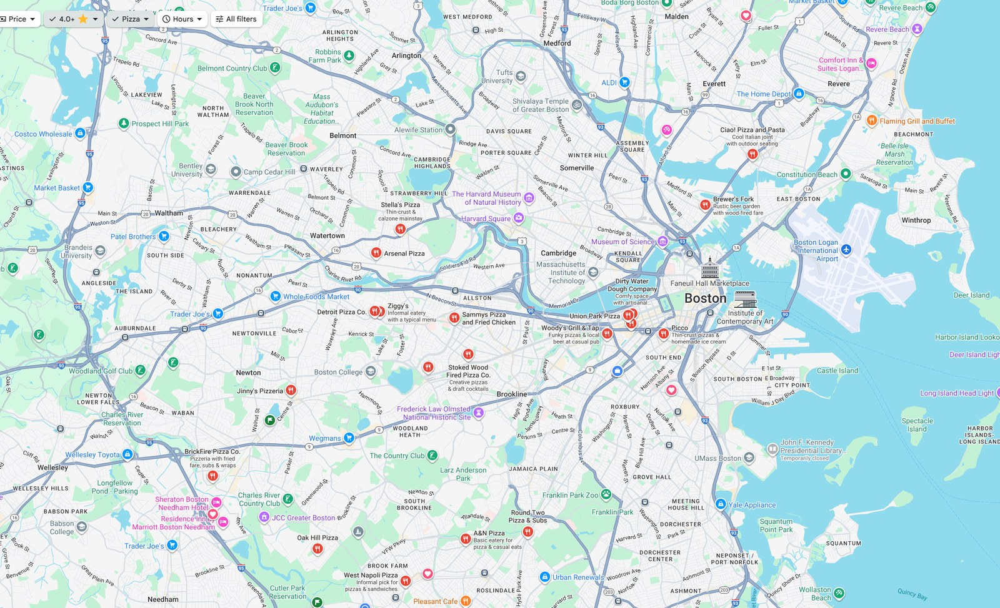
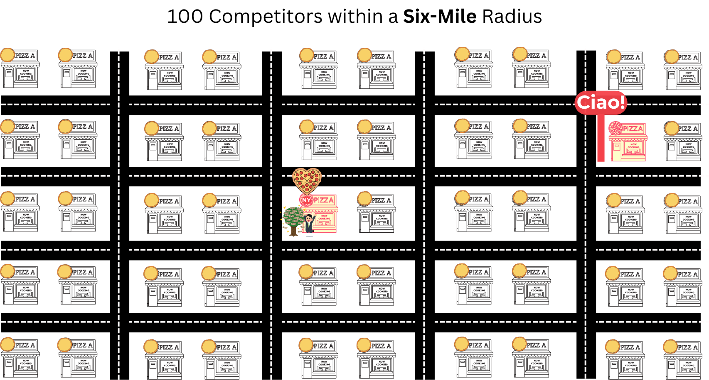
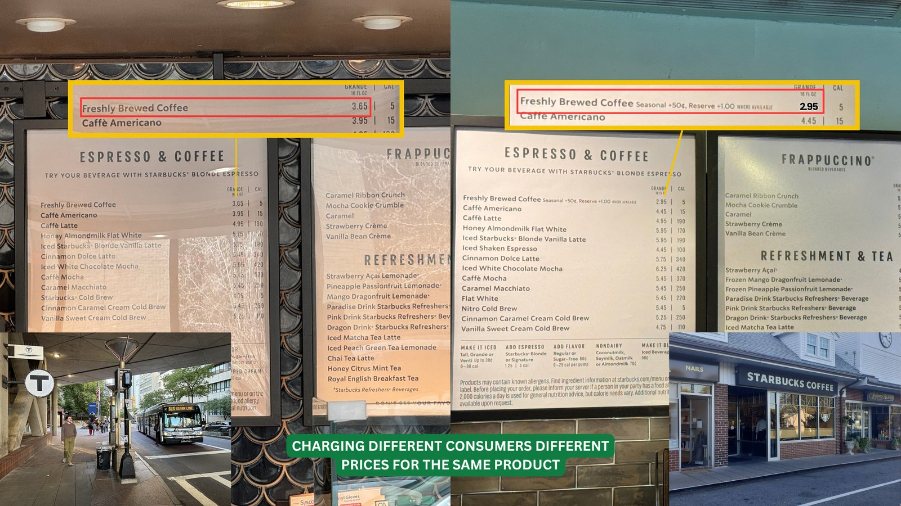
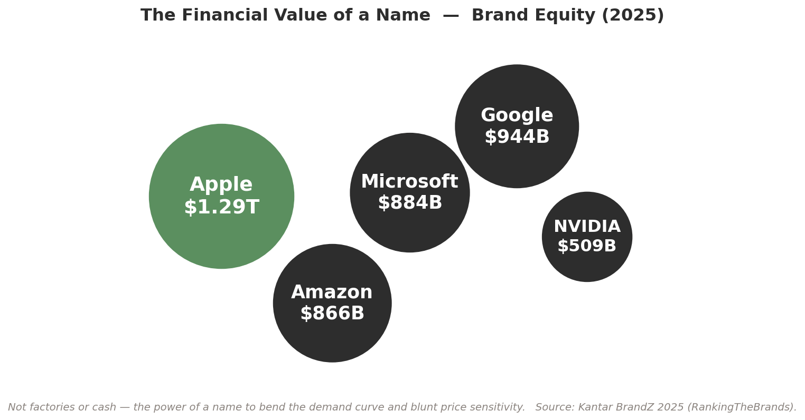
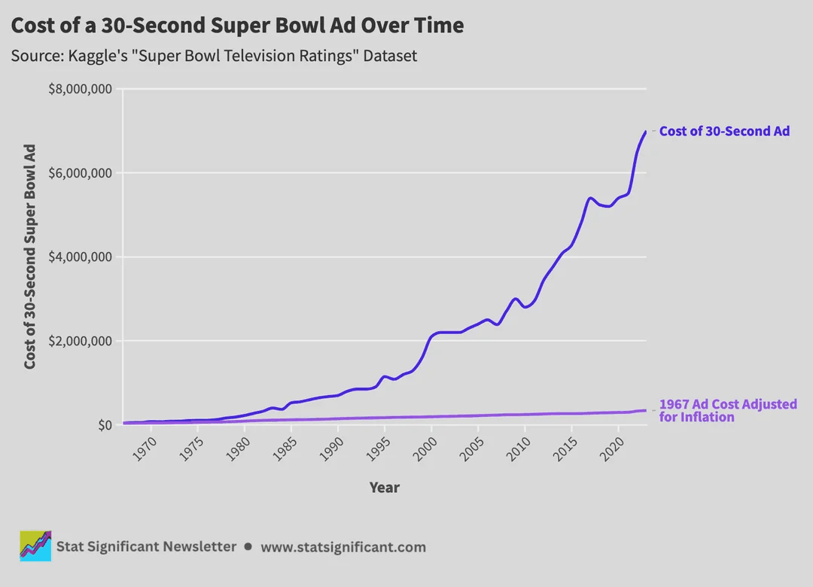
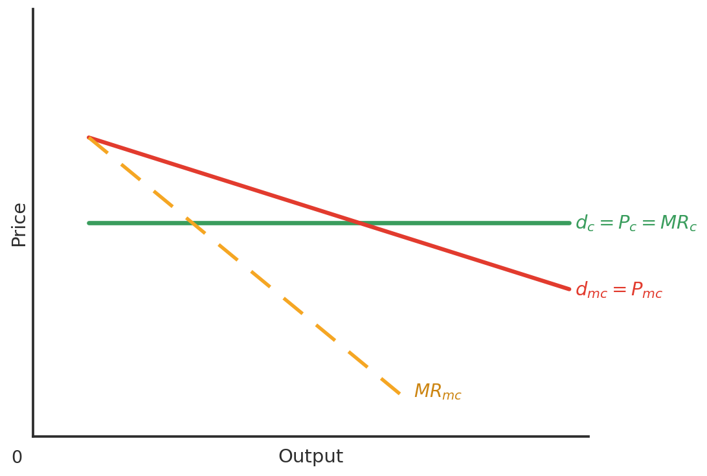
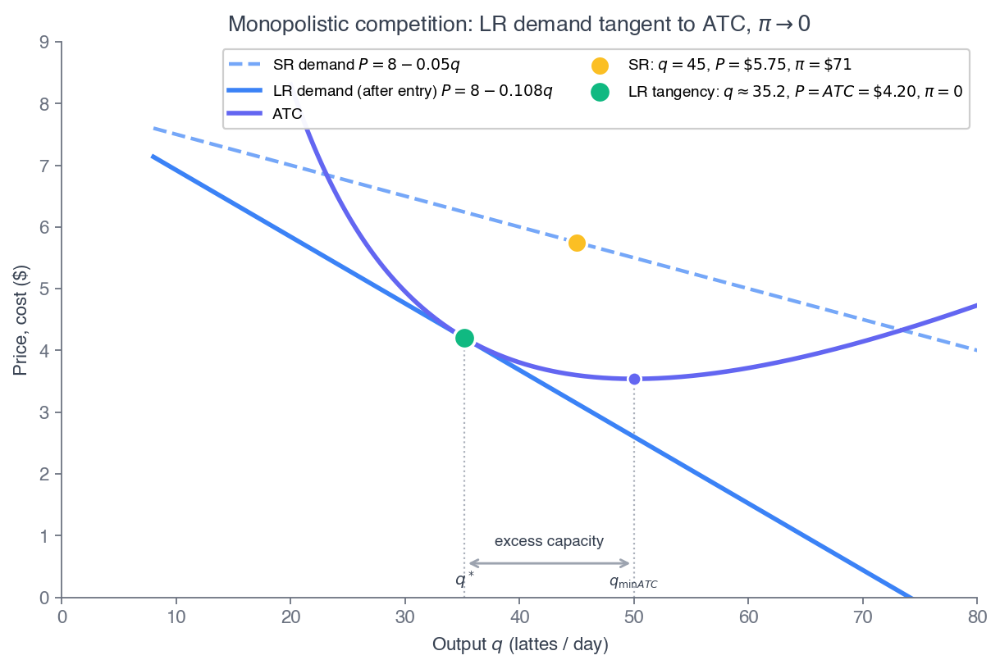

ECON 2316 • Microeconomic Theory • Chapter 13 • Part 1
Monopolistic Competition
Chapter 11 had one firm. Perfect competition (Ch 10) had a faceless crowd. Real markets — coffee, pizza, craft beer, software — live in between: many firms, each selling a product that is almost like the others, with the door wide open for the next entrant.
Dr. Richeng Piao
Department of Economics
Northeastern University — 100 min
Learning Objectives
By the end of Part 1 you will be able to…
1
Characterize monopolistic competition by its four defining features and locate it on the market-structure spectrum. (L2)
2
Explain product differentiation as the engine of a downward-sloping perceived demand curve. (L2)
3
Solve the short-run problem \(MR_i(q_i) = MC(q_i)\) on perceived demand — the Ch 11 monopoly rule, now with a rival next door. (L3)
4
Derive the Chamberlin long-run tangency as a calculus condition — matched value and matched slope — and show entry drives profit to zero. (L4 — central result)
5
State and apply the excess-capacity theorem and weigh the variety-vs-efficiency tradeoff. (L4)
Where Ch 13 Sits on the Spectrum
Chs 11–12 — one firm
A single price-maker, markup pinned by its own elasticity: \(L = (P-MC)/P = -1/\varepsilon_D\). No rival to worry about.
Ch 13 — many firms, free entry
Each firm keeps a sliver of that power from differentiation — but free entry competes the profit away. Today: the left half of the gap.
Part 1 fills the slot just right of perfect competition: keep the crowd and free entry, add differentiation. Part 2 fills the slot just left of monopoly: a few firms who must watch each other. Over 90% of what you buy lives in today's slot.
Two Everyday Markets, One Structure
Coffee. One Cambridge block: three coffee shops, a sandwich franchise, and an empty storefront where a fourth just closed. None a monopoly, none a price-taker — each keeps a loyal core and charges a little above cost.
Beer. 9,578 US craft breweries in 2024 — yet 481 closures against 300 openings, a second straight year of net contraction. Anchor Brewing (est. 1896) closed in July 2023.
9,578
US craft breweries (2024)
481
closed in 2024
300
opened in 2024
−181
net breweries (2nd year down)
Coffee and beer are both monopolistic competition: many differentiated firms with free entry and exit. Differentiation lets each charge \(P > MC\); free entry competes that profit away toward zero economic profit in the long run — the slot just right of perfect competition that Part 1 makes precise.
The Human Cost of Efficiency

Dynamic extraction pushes human earnings down. Inflation-adjusted driver pay fell from £22 to about £19/hour —
— and that is gross revenue, before gas, tire wear, and insurance. Take-home is materially lower, with more unpaid waiting time than before.
Why 16,911 Starbucks and ~38,000 Independents?
Starbucks has scale advantages and the most recognized brand in coffee. So why does any single independent shop down the street survive?
Because coffee shops do not sell identical cups. Each carves out a small monopolistic core — regulars who like the roast, the location, the music, the barista — and faces a downward-sloping perceived demand \(P_i^{d}(q_i)\) over its own variety.
“Many sellers,” yet none selling quite the same cup — that blend of competition and pricing power is exactly the market structure this lecture is about.
The Hook: Allbirds, $4.1B → $39M
In 2021 Allbirds was Silicon Valley's darling — wool sneakers, sugarcane soles, a carbon-neutral story. At IPO it was worth $4.1 billion, more than Under Armour.
A differentiated product in an easy-to-enter market is a magnet for imitators — Hoka, On Running, and dozens more copied the playbook.
Revenue collapsed $298M → $152M; every full-price US store closed.
2026: sold for $39 million — a 99% decline.
This is not a story about bad management.
It is a textbook prediction, rendered in real time.
Short-run profit attracts entry; entry competes economic profit to zero. By the end of Part 1 you will derive exactly why — as a calculus condition.
§13.2 · LO 1–2
What Is Monopolistic Competition?
Many firms, similar-but-different products, easy entry
The Name Captures a Tension
Definition
Monopolistic competition — a market in which (a) many firms produce differentiated products that are close but not perfect substitutes, (b) entry and exit are free in the long run, and (c) each firm has market power over its own variety.
“Competition” — many firms chase the same customers, and new entrants join freely. This pins long-run profit at zero.
“Monopolistic” — each firm's product is a little different, giving it a sliver of power: raise price and lose some, not every, customer.
The whole structure is in the name. “Monopolistic” describes the firm's demand curve (downward-sloping); “competition” describes the market (crowded, free entry).
Four Defining Characteristics
1. Many sellers
A large number of firms, each with a small share. No one sets the market price.
2. Differentiated products
Close substitutes, not perfect ones. The feature that separates this from perfect competition.
3. Free entry & exit
No patents or capital walls. A new oven fires up in a vacant storefront within months.
4. Independent decisions
Too many rivals to track — no firm reacts to any single competitor. Unlike oligopoly (Part 2).
#2 (differentiation) is the boundary with perfect competition; #4 (independence) is the boundary with oligopoly. Those two lines define the slot.
#1 Many Sellers — Pizza Near Campus
Search “pizza near Northeastern” on Google Maps. You’ll find roughly 50 options within a six-mile radius.
No single shop dominates. Each competes for the same pool of hungry students, but none controls enough of the market to set the price.
That’s “many sellers” — the trait MC shares with perfect competition. Yet each storefront is visibly its own product (characteristic #2 is next).
~50 Pizza Shops, One Six-Mile Radius

Every pin is a competitor selling a close substitute. Many sellers, no single price-setter — the first characteristic, live on the map.
100 Competitors, Each Acting Alone

Free entry packs the market with rivals, each too small to react to. One opens or closes and no one calls a meeting — that is independence (characteristic #4).
#2 Differentiated — the Key Twist
Homogeneous (Ch 10)
A bushel of wheat from one farm is identical to the next. The firm is a price-taker: demand is flat, \(P = MR\).
Differentiated (Ch 13)
Ciao's wood-fired margherita is not Sal's NY slice. A few regulars stay even if Ciao raises price — demand slopes down, \(P > MR\).
Each firm's product is a close substitute for its rivals' — but not a perfect one. That single fact bends the firm's perceived demand \(P_i^{d}(q_i)\) downward. Everything in §13.2 follows from it.
Notation: we write firm \(i\)'s own demand as \(P_i^{d}(q_i)\) — the price it can charge as a function of its output, holding the rest of the market fixed.
Differentiation in One Listing: Ciao!
Gourmet wood-fired pizza · 4.8★ · $20–30 · a snug modern-rustic room. Not a commodity slice — its own niche, its own loyal regulars.
That niche is exactly what makes Ciao's perceived demand \(P_i^{d}(q_i)\) slope down: raise the margherita a dollar and the regulars who came for this room and this oven mostly stay. A by-the-slice window two doors down has no such core.
Same six-mile market as ~50 rivals — yet Ciao holds a price a commodity slice never could. Differentiation is the engine of the markup we model in §13.2.
#3 Free Entry & #4 Independence
#3 Free entry & exit
No patents, licenses, or massive capital walls.
Entry: ~300 new craft breweries opened in 2024.
Exit: Allbirds closed every full-price store. This is the force that drives profit to zero (§13.2 long run).
#4 Independent decisions
Each firm is small enough that its choices barely register with rivals.
When one shop runs a special, the other 99 do not hold an emergency meeting. No strategic interaction — the math stays tractable.
Contrast #4 with oligopoly (Part 2), where a few firms watch each other's every move — and we need game theory.
Misconception Check
The myth
“Monopolistic competition means the market is partly a monopoly.”
The reality
Every firm has a tiny monopoly over its own specific variety — no one else sells the exact same cup as Ciao. But the market is fiercely competitive because close substitutes are everywhere. “Monopolistic” describes the firm's perceived demand curve, not the market's structure.
Why Differentiation Matters
Gives modest control over price — a.k.a. market power.
The perceived demand curve is downward-sloping — but highly elastic, because close substitutes are everywhere.
Product differentiation is the key to success in monopolistic competition — it is what earns the markup that free entry will then compete away.
How Do Firms Differentiate?
If you can't win on price, you win on everything else. Six levers a monopolistically competitive firm pulls to carve out a niche:
Location
Branding
Packaging
Quality
Service
Advertising
Each lever shifts perceived demand out and makes it less elastic — a bit more market power, a bit more markup. Press ↓ to see each in the wild.
Method 1 — Superior Location

Identical Grande coffee: $3.65 at a captive transit-station store vs $2.95 in the suburbs. A captive audience makes demand less elastic → a bigger markup. Location is differentiation.
Method 2 — Branding & Switching Costs
Brand equity is the power of a name to bend demand and blunt price sensitivity — Interbrand values Apple's brand alone near $470B (2025).
Definition
Switching costs — the time, money, and effort to move to a rival's product. Higher switching costs → less elastic demand → more market power.
Embed in Apple's ecosystem — iPhone, iCloud, Watch, Family Sharing — and each device raises your switching cost. A loyal customer won't jump for a small price gap. The curve steepens.

How Brands Rewire Your Brain
“How Apple and Nike have branded your brain” (Big Think) — branding works at the psychological level, making a product feel like part of who you are, so price competition stops biting. Click to play.
Do Brand Names Add Value? The Debate
Brand-name goods coexist with generics — they advertise more and charge more. Economists disagree about whether that is good for society.
Critics
Products aren't really different. Paying more for a label is irrational — brands waste resources on persuasion and soften price competition.
Defenders
Brands signal quality and cut search costs. A valuable name is a costly bond: the firm won't risk its reputation, so the name itself guarantees quality.
Both have a point — and the “costly bond” idea returns as the advertising-as-signal argument in two slides.
Method 3 — Packaging & Presentation
Roche Bros. piles produce in rustic wooden crates with hand-lettered signs. The same tomatoes feel fresher and more premium — presentation differentiates a near-commodity.
Method 4 — Quality & Craftsmanship
Market Basket
Competes on price — about 15% below average.
Trader Joe's
~4,000 items, 80% private-label exclusives you can't get elsewhere.
Whole Foods
Organic certification and premium presentation.
All three sell groceries. None sells the same product. Each carved a different niche — a different perceived demand curve — on the same shelf. Bespoke tailoring vs off-the-rack is the same story in clothing.
Craftsmanship: Bespoke vs Off-the-Rack
Bespoke tailoring vs off-the-rack retail: same category, wildly different product. Craft, materials, and fit carve out a separate niche at a separate price — a steeper, less elastic perceived demand.
Method 5 — Service & Experience
Dunkin'
Sells speed and value. In and out.
Pavement Coffeehouse
Cozy sofas, craft bagels, laptop charging. Sells the experience.
Data Snapshot — US independent coffee shops
Over 64,000 independents. Chains hold ~62% of the footprint, but indies grow ~3%/yr — faster than chains. Their weapon: differentiation. Sources: World Coffee Portal; IBISWorld.
Method 6 — Advertising
Two faces, two effects on the perceived demand curve
Informational
Function: reduces search costs.
Effect: more informed buyers → more elastic demand, more competition. “CRM software, $45/mo — click here.”
Persuasive
Function: alters preferences / builds loyalty.
Effect: less elastic demand, a steeper markup — a new phone when the old one works fine.
Same ad budget, opposite effects on elasticity. The empirical question — does advertising inform or persuade? — has a surprisingly clean answer on the next slide.
Critique vs Defense — the Evidence
Critique
Advertising manipulates tastes and inflates perceived differentiation → brand loyalty, higher markups, buyers less concerned with price.
Defense
Advertising carries real information → informed buyers → more competition and lower prices.
Eyeglasses — more expensive in states that banned advertising. Benham, J. Law & Economics, 1972.
Liquor — about 20% cheaper after advertising was allowed. Milyo & Waldfogel, AER, 1999.
Two clean natural experiments, same verdict: where advertising is allowed, prices are lower — the informational channel dominates here.
Advertising as a Signal of Quality
A Super Bowl ad can carry almost no information — yet the willingness to spend is itself the signal.
Ads drive trials; quality drives repeat purchases. Only a firm expecting repeat buyers can recover an expensive ad — so the spend is credible because a low-quality firm couldn't justify it. The spend, not the content, is the message (Nelson).

A 30-second Super Bowl ad now runs ~$8M — justified only if the product brings buyers back.
Poll — Why Is the Ad a Credible Signal?
A startup pays $8 million for one Super Bowl ad. In Nelson's framework, why does that credibly signal quality to consumers?
A. It proves the firm is large and well-funded
B. Only a firm expecting repeat buyers can recover $8M — a bad product can't
C. The ad directly lowers the firm's marginal cost
D. Super Bowl ads are pre-screened for quality by the network
Click your answer. Press ↓ for results.
Poll Results
Answer: B. The ad is credible because the cost is only recoverable through repeat purchases — which a low-quality product can't generate. The signal is in what the firm is willing to risk.
A conflates deep pockets with quality; C/D describe mechanisms that don't exist.
The Software Paradox
Garage Entry
Anyone can write code on a laptop. Entry barriers are almost zero.
Premium Subscriptions
Yet leaders charge $45–$165 / user / mo — and keep their customers.
| Salesforce | HubSpot | |
|---|---|---|
| Target | Large enterprises | Small & mid-size firms |
| Strategy | Deep customization & ecosystem | Ease of use, all-in-one |
| Pricing power | ~$165 / user / mo | ~$45 / user / mo |
Near-zero entry cost, near-zero marginal cost — yet no commodity price war. The resolution is the engine of this whole chapter: differentiation. Each firm owns a distinct slice and holds its price.
Pricing Power — but the Elasticity Constraint Bites
Differentiation buys pricing power — but not a monopoly. Free entry keeps perceived demand elastic.
A hungry rival is always one click away
The constraint: if HubSpot tripled its price with no lock-in, hundreds of thousands of customers would flee to a cheaper CRM.
The driver: low barriers mean there is always a startup offering a $40 CRM.
The reality: demand is elastic — a markup exists, but it is thin and always contestable. That is the whole difference from monopoly.
From Price Taker to Price Maker
Price Taker
The market sets the price; demand is flat, \(P=MR=MC\).
Wheat farmer — perfect competition (Ch 10)
Algorithmic Extractor
The platform's code sets the price, capturing surplus on both sides.
Rideshare dynamic pricing (our case study)
Differentiated Maker
Your variety sets the price; perceived demand \(P_i^{d}(q_i)\) slopes down, \(P>MC\).
Ciao, Salesforce, HubSpot — monopolistic competition
The neutral invisible hand recedes left to right: the more a firm differentiates, the more it sets its own price. Monopolistic competition is the honest right-hand column — a genuine sliver of power that free entry keeps thin.
Economist at Work: Edward Chamberlin
Edward Chamberlin (1899–1967) developed the theory of monopolistic competition at Harvard, published as The Theory of Monopolistic Competition in 1933. His radical claim: most markets feature differentiated products — not the textbook poles of pure competition or pure monopoly. He worked out the central result we derive today: the long-run tangency of perceived demand to average cost.
He also pioneered experimental economics, running classroom market experiments in the 1940s that anticipated Vernon Smith's Nobel-winning work (Ch 10).
Joan Robinson developed a parallel framework the same year (1933) at Cambridge. Both were passed over for the Nobel, which began in 1969 — two years after Chamberlin died.
§13.2 · LO 3
Short-Run Profit Maximization
A price-maker on its own perceived demand — the Ch 11 rule, \(MR_i = MC\)
The Firm Is a Price-Setter, Not a Price-Taker
Differentiation gives firm \(i\) a downward-sloping perceived demand \(P_i^{d}(q_i)\). It chooses \(q_i\) to maximize
\(\pi_i = P_i^{d}(q_i)\,q_i - C(q_i)\)
1. Some price control. Raise Ciao's price by $1 and a few switch to Sal's — but the regulars stay. Price-setter.
2. \(MR_i < P\). To sell one more unit it cuts price on all units — but demand stays relatively elastic, so the markup is small.

Homogeneous good (Ch 10): flat demand, \(P=MR\). Differentiated good (Ch 13): demand slopes down, \(MR < P\).
The Rule: \(MR_i(q_i) = MC(q_i)\), so \(P > MC\)
1 · Find \(Q^{\ast}\). \(\dfrac{d\pi_i}{dq_i} = MR_i - MC = 0 \Rightarrow MR_i = MC.\) That is where dashed MR cuts the MC check mark.
2 · Read \(P\) off demand. Go up from \(Q^{\ast}\) to D — never to MR. Because \(D\) slopes down, \(MR_i < P\), so \(MC = MR_i < P\): a positive markup, the bracket on the graph.
3 · Read profit off ATC. Compare \(P\) with ATC at \(Q^{\ast}\). Gap \(\times\, Q^{\ast}\) = the shaded box: green profit, red loss, nothing at tangency.
Shapes to expect. ATC is U-shaped — fixed cost spread thin, then diminishing returns. MC is a check mark that pierces ATC exactly at its minimum.
Drag demand or pick a scenario. \(Q^{\ast}\) sits where \(MR = MC\); the box is profit (green) or loss (red). \(P\) stays above \(MC\) in every case.
Poll — What Happens Next?
A campus coffee shop earns $250/day in economic profit on a differentiated cold brew. Entry barriers are low. What does the model predict over the next year?
A. Profit grows — its brand gives it lasting market power
B. New shops enter, each firm's perceived demand shifts left, profit → $0
C. Profit stays positive forever — the product is differentiated
D. It should just raise price to capture more profit now
Click your answer. Press ↓ for results.
Poll Results
Answer: B. Positive economic profit attracts entry. Each new differentiated rival steals a few customers, shifting the incumbent's perceived demand left and flatter until \(P = ATC\) and profit hits zero.
C is the trap: differentiation gives a downward demand curve, not immunity from entry. That's the whole point of the long-run tangency.
§13.2 · LO 4
Long-Run Equilibrium — the Chamberlin Tangency
Free entry pulls every firm to the point where perceived demand kisses ATC
Entry Erodes Profit, Exit Erases Loss
Profit → entry. New firms enter; each captures some of the existing customer base, shifting every incumbent's perceived demand inward. Stops when profit \(= 0\).
Loss → exit. Firms leave; their customers spread to survivors, shifting demand outward. Stops when losses disappear.
Same self-correction as perfect competition — but here it works by shifting the firm's perceived demand curve, not the market price.
The tangency is an attractor: perturb demand, release, and entry/exit pulls it back to \(P = LRATC\).
The Tangency Condition — Two Things at Once

In long-run equilibrium two conditions hold simultaneously:
1. \(MR_i = MC\) — profit is maximized.
2. \(P^{d}(q^{\ast}) = ATC(q^{\ast})\) — economic profit is zero.
Recall from Principles — 1116 §12.3
1116 drew this graphically: perceived demand tangent to ATC, with \(P > MC\) but \(P = ATC\). Today we write tangency as a calculus condition — matched value AND matched slope.
Calculus Corner 13.1 — Tangency as a Calculus Condition
At the long-run free-entry equilibrium output \(q^{\ast}\), two equations hold:
\(P^{d}(q^{\ast}) = ATC(q^{\ast})\) (matched value)
\(\dfrac{dP^{d}}{dq}\Big|_{q^{\ast}} = \dfrac{dATC}{dq}\Big|_{q^{\ast}}\) (matched slope)
Why matched slopes? At the entry margin, perceived demand cannot cross ATC — a crossing would leave a range of outputs with \(P^{d} > ATC\) (positive profit), inviting more entry. It can only touch. Tangent curves share a slope.
The decisive contrast. In perfect competition the firm's demand is flat, so it is tangent to ATC at its minimum, where \(dATC/dq = 0\). There \(P = MC = \min ATC\).
In monopolistic competition \(dP^{d}/dq < 0\), so the matched slope is negative — tangency lands on the falling branch of ATC, left of \(\min ATC\). That gap is the excess capacity, derived in one line.
Combine with \(MR_i = MC\): since \(MR_i < P^{d} = ATC\), we get \(MC < ATC\) and \(P > MC\). The markup and the excess capacity fall out of the same two equations.
Misconception: “Zero Profit = Broke”
The myth
“Zero economic profit means the business is failing.”
The reality
Zero economic profit \(\neq\) zero accounting profit. The firm covers all costs — including the owner's opportunity cost. The owner earns a normal return: exactly what their next-best alternative pays. A stable resting point, not a death sentence.
Walkthrough 13.1 — Coffee Shop, Short Run to Long Run
Problem. An independent coffee shop on Northeastern’s campus has SR perceived demand \(P = 8 - 0.05q\) (lattes/day) and SR cost \(C(q) = 30 + 3.5q\). Find SR \((q_s, P_s, \pi_s)\). In the long run, entry shifts demand to \(P^{d}_l = 8 - 0.108q\) with LR \(ATC = \$4.20\) at the LR optimum. Verify the tangency and find the excess capacity.
Short run
\(\pi = (8 - 0.05q)q - (30 + 3.5q) = 4.5q - 0.05q^2 - 30\).
FOC \(4.5 - 0.10q = 0 \Rightarrow q_s = 45\), \(P_s = \$5.75\). \(\pi_s = \$71.25\)/day, \(L_s = (5.75-3.5)/5.75 = 0.391\).
Long run & check
\(\$71.25\)/day \(\approx \$26{,}000\)/yr of profit pulls in an entrant; perceived demand falls to \(P^{d}_l = 8 - 0.108q\).
Set \(P^{d}_l = ATC\): \(4.20 = 8 - 0.108q^{\ast} \Rightarrow q^{\ast} \approx 35\), \(P^{\ast} = \$4.20\). \(L_l = 0.70/4.20 = 0.167\).
Min efficient scale \(\approx 50\) lattes/day; the shop runs at 35 — about 30% excess capacity.
Takeaway. The LR tangency shows both Chamberlin features: \(P > MC\) (markup, \(L_l = 0.167\)) and output below efficient scale (35 vs 50). Both arise because perceived demand slopes down — the shop keeps a monopoly core competition cannot fully erode.
Application: The Craft-Brewery Contraction in Real Time
2010–2018: US craft breweries roughly doubled (~1,800 → ~7,500) on the IPA boom. Per-capita consumption did not double — each brewery's perceived demand was diluted inward.
2024: 9,578 breweries, but 481 closures vs 300 openings — the second straight year of net contraction. Anchor (1896), Stone, 21st Amendment, Sweetwater all shut facilities 2023–2025.
This is the excess-capacity theorem running in reverse. Too many differentiated producers entered; perceived demand at each brewery's product line collapsed inward past the tangency; margins turned negative for the marginal producer, who exited.
Each closure restores the survivors' perceived demand toward the LR tangency. The 2024 closures-greater-than-openings pattern is the system equilibrating — named firms entering and exiting exactly as the Chamberlin model predicts.
The Same Cycle in a Cup: Coffee Shops
Early — strong margins. The first cafes earn healthy profit just selling regular coffee.
Differentiate. To stand out, shops add single-origin beans, atmosphere, branding — and a markup (\(P>MC\)).
Profit → entry. Visible profit pulls in a wave of new cafes, each with its own twist.
Exit. Free entry grinds economic profit to zero; the weakest shops close. Then it repeats.
Differentiation earns the margin; free entry competes it away — the Chamberlin tangency, lived one cup at a time.
§13.2 · LO 5
Excess Capacity & the Cost of Variety
Zero profit, but not efficient — and that is the price of having choices
The Excess-Capacity Theorem
Theorem
At the Chamberlin long-run tangency, \(P > MC\) (a positive markup persists) and firm output is below minimum efficient scale, \(q^{\ast} < q_{\min ATC}\) (excess capacity).
Both follow from one fact: perceived demand is downward-sloping at the equilibrium. A downward line tangent to a U-shaped ATC must touch on the falling branch — geometrically unavoidable, as CC 13.1 showed.

What Excess Capacity Looks Like
A coffee shop on a Tuesday at 3 PM: half-empty tables, idle espresso machines, baristas waiting. That is excess capacity — the firm could make more at a lower average cost, but doesn't.
The efficient design would be a bare drive-through window — minimum cost per cup. But customers value the chairs, the music, the pour-over options.
Digital version: Netflix, Disney+, Max, and Peacock each run redundant servers, apps, and marketing teams. One merged platform would be cheaper — but you would lose the variety.
The Markup: \(P > MC\)
Definition
Markup \(= P - MC > 0\) in monopolistic competition; the Lerner index \(L = (P-MC)/P\) stays positive.
A positive markup means some transactions that would benefit both buyer and seller never happen — a customer who values a cup between \(MC\) and \(P\) walks away. That is the allocative inefficiency.
Contrast: perfect competition drives \(P = MC\), so no such gap exists.
Is It Inefficient? Variety vs. Efficiency
Versus perfect competition, MC looks wasteful: excess capacity and a markup. But perfect competition requires identical products — one coffee, one pizza, one CRM.
The excess capacity and the markup are the price we pay for variety. Whether that price is worth it is a quantitative question, not a foregone conclusion.
Spence (1976) and Dixit–Stiglitz (1977) built the workhorse model of the variety–scale tradeoff; Mankiw–Whinston (1986) showed free entry can yield a socially excessive number of firms (“business stealing”) — yet each entrant also adds a variety. Net welfare: ambiguous.

The Efficiency Gap, Side by Side

Same cost curves. PC settles at \(\min ATC\) with \(P = MC\) (efficient). MC settles to the left, \(P > MC\), with excess capacity — the geometry of variety, exactly as CC 13.1 predicts.
Think Like an Economist
Suppose the government mandated a single, standardized note-taking app for all phones — one app, maximum efficiency, lowest possible cost per user.
Would society be better off? What would be lost?
Efficiency would rise — but variety, experimentation, and the match to different users' needs would vanish. That trade-off is monopolistic competition. (60-second turn-and-talk.)
§13.2 · Wrap-up
Monopolistic Competition in Action
The cycle, everywhere you look — then on to oligopoly
The Same Cycle, Three Industries
Coffee & beer
Profit → entry wave (breweries ~1,800 → ~9,700) → overshoot → net exit (481 closures, 2024). Zero profit with persistent markup.
The software paradox
Salesforce ~$165 (enterprise depth) vs HubSpot ~$45 (SMB simplicity). Differentiation holds prices apart; new entrants keep demand elastic.
The DTC graveyard
Warby Parker, Casper, Allbirds, Away. By 2024, >50% of public DTC firms lost half their IPO value — entry competed the margin away.
Profit attracts entry → entry erodes profit → weak firms exit. The chapter's prediction, on repeat — the same engine behind Allbirds from our opening hook.
The Four Structures, Side by Side
| Feature | Perfect Comp. | Monop. Comp. | Oligopoly | Monopoly |
|---|---|---|---|---|
| Number of firms | Many | Many | Few | One |
| Product type | Identical | Differentiated | Either | Unique |
| Entry barriers | None | Low | High | Very high |
| Long-run profit | Zero | Zero | Possible | Possible |
| P vs. MC | \(P = MC\) | \(P > MC\) | \(P > MC\) | \(P > MC\) |
| Strategic? | No | No | Yes — Part 2 | No |
MC shares “many firms” and “zero long-run profit” with perfect competition, but “differentiated + \(P>MC\)” with the market-power structures. Dixit–Stiglitz (1977) formalized the welfare gain from variety; Paul Krugman built on it to win the 2008 Nobel.
Behavioral Lens: The Paradox of Choice
Psychologist Barry Schwartz: too many options can make consumers worse off.
Faced with 30 varieties of jam, shoppers are less likely to buy any (Iyengar & Lepper, 2000).
Faced with dozens of subscriptions, some feel “subscription fatigue” and cancel everything.
The Dixit–Stiglitz model says more variety raises welfare — behavioral economics (Ch 18) warns there is a point where it overwhelms.
Data Snapshot — US restaurants
A textbook monopolistically competitive industry. Survival: ~80% at 1 yr, ~50% at 5 yrs, ~35% at 10 — most differentiated entrants don't reach year 10. National Restaurant Assoc.; BLS.
Key Takeaways
1. Monopolistic competition = many firms, differentiated products, free entry, independent decisions. Over 90% of what you buy.
2. Differentiation → downward perceived demand \(P_i^{d}(q_i)\) → firm maximizes at \(MR_i = MC\), with \(P > MC\) (the Ch 11 rule).
3. Free entry drives long-run profit to zero: the Chamberlin tangency — matched value \(P^{d}=ATC\) AND matched (negative) slope.
4. Excess-capacity theorem: tangency sits left of \(\min ATC\) → excess capacity + a positive markup. The price of variety; net welfare ambiguous (Spence; Dixit–Stiglitz; Mankiw–Whinston).
5. Firms differentiate on location, branding, packaging, quality, service, and advertising — which can inform, persuade, or signal quality.
Connections — and on to Part 2
Built on
Ch 8 cost curves, Ch 10 entry/exit & efficiency, Ch 11 the \(MR < P\), \(MR = MC\), Lerner machinery.
Today (Part 1)
The hybrid: a sliver of market power that free entry competes away — leaving variety, excess capacity, and zero profit at the tangency.
Next — Part 2
Oligopoly: drop the “independent decisions” assumption. A few firms who watch each other — Cournot, Bertrand, Stackelberg, and the cartel bound.
We've now walked the spectrum's left half: perfect competition → monopolistic competition → monopoly. Part 2 fills the last gap — remove independence, make firms react to each other, and you get strategic interaction, i.e. game theory.
Exit Ticket
A pizza shop in long-run equilibrium has \(P = \$14\), \(ATC = \$14\), and \(MC = \$9\) at its chosen quantity.
(a) Economic profit? (b) Markup and Lerner index? (c) Is this allocatively efficient? (d) Which side of \(\min ATC\) is output on, and why?
(a) \(P = ATC \Rightarrow\) zero economic profit. (b) Markup \(= \$14 - \$9 = \$5\); \(L = 5/14 = 0.357\). (c) No — \(P > MC\), so buyers who value a pizza between \$9 and \$14 are priced out. (d) Left of \(\min ATC\): perceived demand slopes down, so tangency is on the falling branch — excess capacity.
Submit on the way out. See you for Chapter 13, Part 2 — Oligopoly.